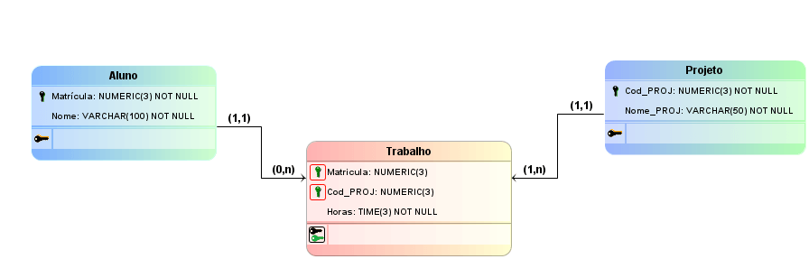

Banco de dados
Entenda o que são e para que servem!
O que são Banco de dados?
Um banco de dados é uma coleção organizada de informações - ou dados - estruturadas, normalmente armazenadas eletronicamente em um sistema de computador. Um banco de dados é geralmente controlado por um sistema de gerenciamento de banco de dados (DBMS).
Modelo entidade relacionamento
O MER (Modelo Entidade Relacionamento) é utilizado para descrever os objetos do mundo real através de entidades, com suas propriedades que são os atributos e os seus relacionamentos.
Diagrama entidade relacionamento
O DER (Diagrama Entidade-Relacionamento) é utilizado para representar em forma gráfica o que foi descrito no MER (Modelo Entidade Relacionamento)